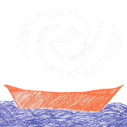
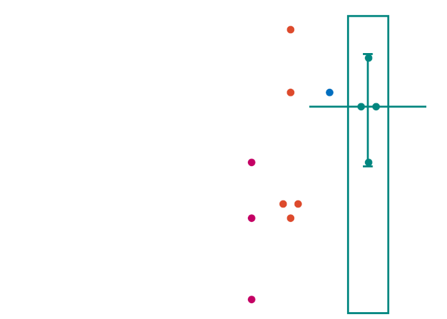
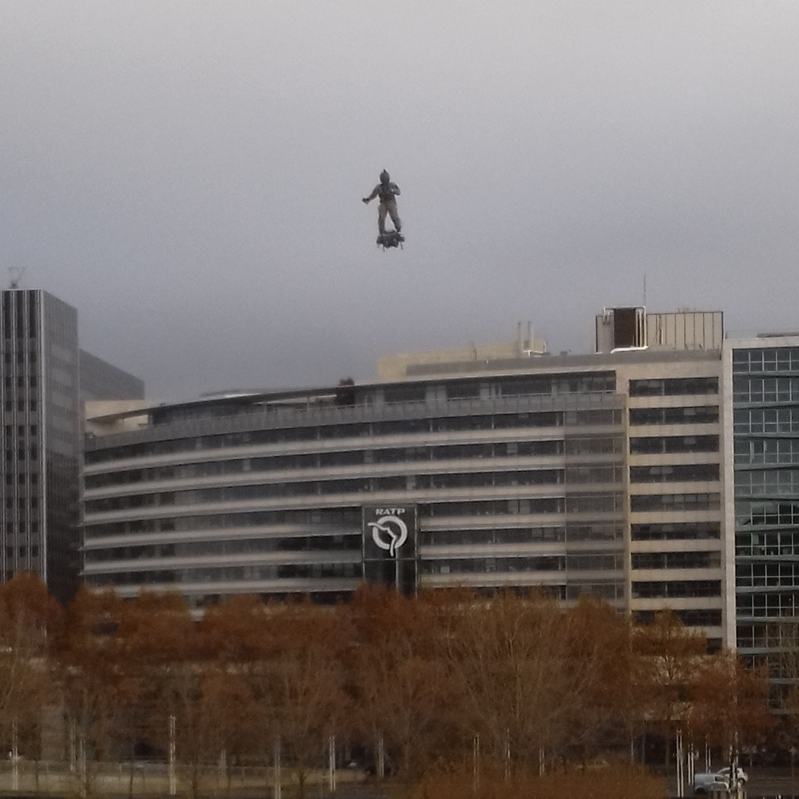

Web
StackOverflow: Top 100
Html page in English StackOverflow top 100 post for certain tags
Vim Application
Html page in English Vim.js: vim compiled as js with emscirpten to be used in navigator
Astronomy
Observational Cosmology: 10 Cmd
Pdf presentation in French CosmObs: Introduction to observational cosmology tools and practices
Searching though gavitational lenses
Pdf book in French Master tesis: Searching for i-band dropout galaxies lensed by galaxy clusters
Abism

Pdf article in English ABISM: an interactive image quality assessment toolfor adaptive optics instruments
Stellar formation
Pdf book in French Internship report: Les galaxies de faible masse et le scénario de formation stellaire
Ciber
YaDiff

Pdf slide in French Presentation: YaDiff: Yet Another Diffing software to propagate reverse analysis symbols between Ida databases
Forum Innovation Défense

Html report in French Retour d'Expérience du Forum d'Innovation de la Défense
Kaspersky: SAS
Txt report in French Two annual kaspersky conferences (SAS)
LibGdx
Pdf presentation in English LibGdx: Cross platform Java game development framework (Desktop/Android/BlackBerry/iOS/HTML5)